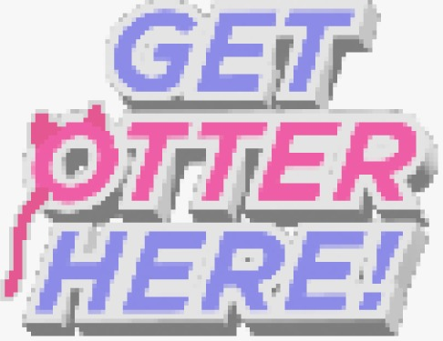
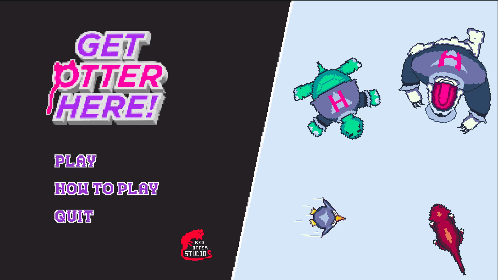

Hack2Interact Game Jam — Winner
Get Otter Here!
A game where the entire control scheme is a mouse and one button.
Every mechanic, movement, timing, decisions, had to be expressed through a single click and where you point the cursor. I directed the team through that constraint: keeping the design honest to "one button" while making sure it never felt thin. My own work was split between optimization, keeping the game smooth on modest hardware during a tight jam deadline, and the visual polish that gives each level its personality.
It placed first at Hack2Interact, judged on how fully a team could build a complete, polished experience around one restriction.
- Godot
- GDScript
- One-button design